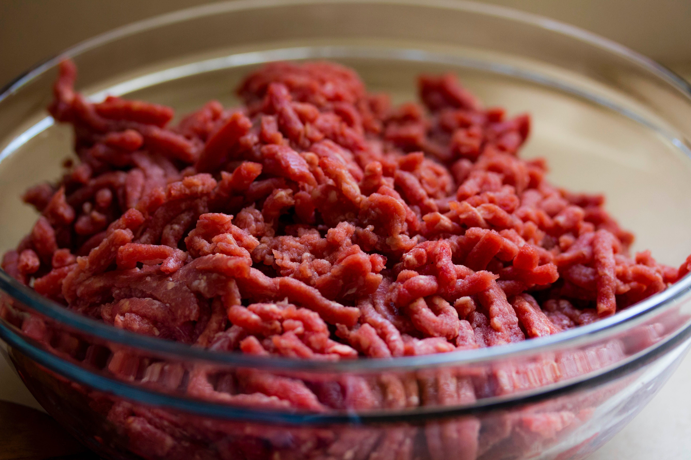

Cottage Pie
Recipe feeds four people. Enjoy with your favourite vegetables.
Ingredients
-
6 large potatoes
-
500g beef mince (5% fat)
-
1 large onion
-
1-4 cloves of garlic depending on taste
-
worcestershire sauce
-
100-500g cheddar cheese

Photo by Angele J:
Method
-
Peel and slice potatoes. Boil potatoes in salted water.
-
Allow potatoes to sit in water, with heat off, and chop onion finely.
-
Crush garlic with knife, garlic press or mortar and pestle.
-
Fry mince and onion simultaneously, breaking up mince and turning over to cook evenly.
-
Add garlic and worcestershire sauce to mince, turn down heat then cover.
-
Drain potatoes and mash well, adding 50 - 250g cheese whilst mashing.
-
Add mince to suitable oven dish, covering with mash. Add remaining cheese
and cook on medium heat till brown on top.
-
Allow to cool for 15 minutes before serving.